עסק שעושה המון
האתגר המרכזי היה להפוך עסק שעושה המון דברים למותג אחד ברור. לכן התחלנו מהאסטרטגיה ולא מהעיצוב, ובחרנו בשם שמספר את החוויה ולא רק את הפעילות.
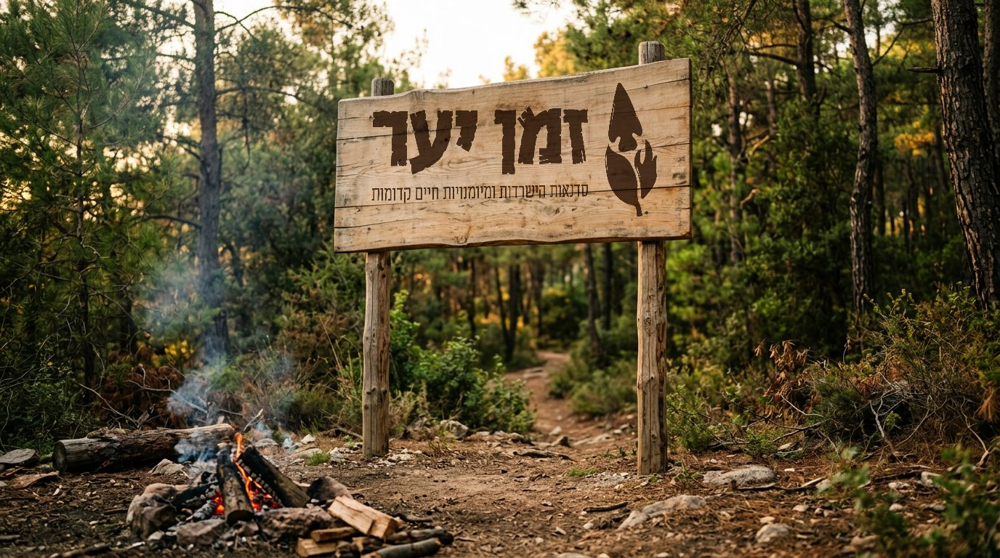
לסיפור המלאקייס סטאדי
שם, מיתוג ואתר תדמית לסדנאות הישרדות ומיומנויות חיים קדומות
איך הופכים עסק עם קהילה חזקה, לקוחות מרוצים והמון ידע, למותג שאנשים מבינים תוך כמה שניות? זה היה האתגר בפרויקט של אורי ג'ייקובס, מדריך סדנאות הישרדות ומיומנויות חיים קדומות בטבע.
על אף שהעסק כבר פעל במשך שנים, כל שיחה עם לקוח חדש התחילה באותה שאלה: "אז.. מה אתה בעצם עושה?"
המטרה הייתה ליצור זהות שתספר את הסיפור של העסק גם כשאורי לא נמצא שם כדי להסביר אותו.
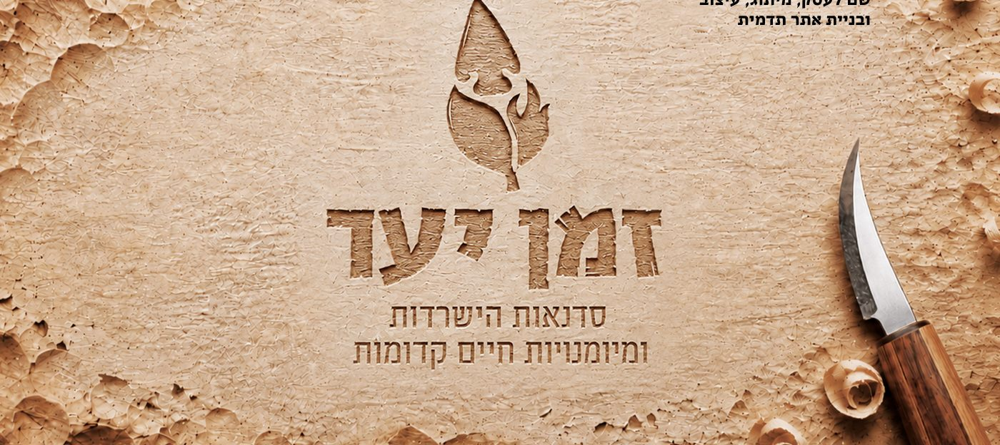
לעצור,
לנשום,
לחזור לטבע
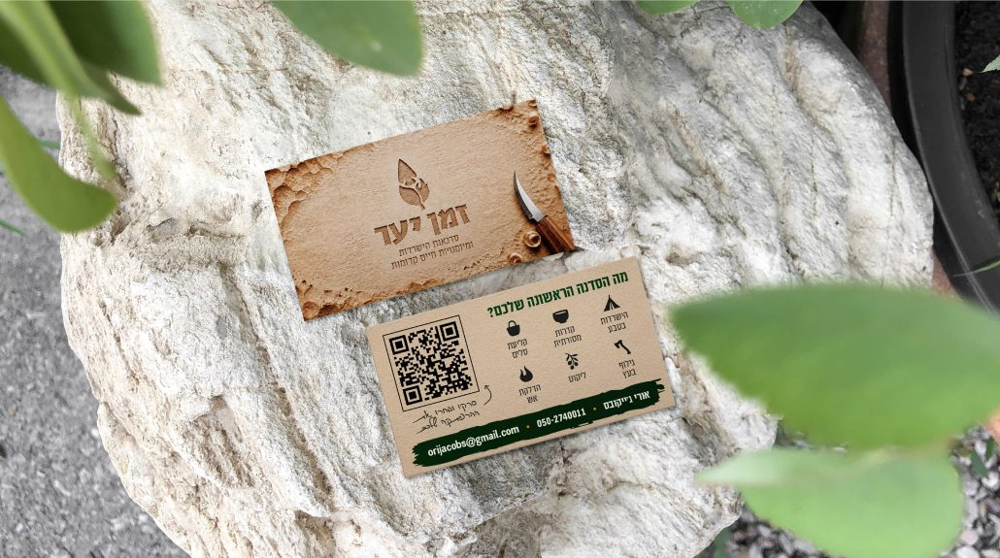
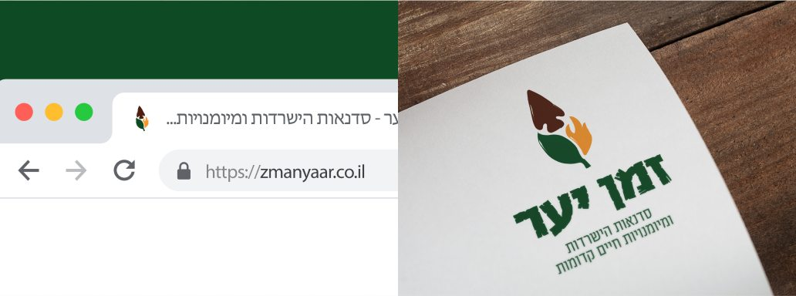
הבריף
אורי בנה במשך שנים עסק שמבוסס על אהבה אמיתית לטבע, למלאכות קדומות וללמידה דרך התנסות. הלקוחות שלו אהבו את החוויה, הקהילה הלכה וגדלה, אבל המותג נשאר מאחור.
השם "אש החיים" יצר אסוציאציות שלא התאימו לעסק, המיתוג הקיים לא שיקף את הערכים שלו, ולא היה מקום אחד שמרכז את כל הפעילויות. בפועל, אנשים לא הבינו במה העסק עוסק.
במקום להתרכז בשיווק, אורי מצא את עצמו מסביר שוב ושוב: "אני מעביר סדנאות הישרדות.. גילוף.. סיתות.. אש.. ועוד.."
המטרה הייתה פשוטה: לבנות מותג שיסביר את עצמו.
"אז.. מה אתה בעצם עושה?"
מעכשיו, האתר עונה במקומו.
המטרה
המטרה העסקית הייתה ליצור זהות ברורה שתאפשר לכל אדם להבין במה העסק עוסק, למי הוא מתאים ומה מייחד אותו כבר במפגש הראשון. כדי להגיע לשם היינו צריכים:
סימן ההצלחה שהגדרנו: שאורי יוכל פשוט לשלוח קישור, והאתר יעשה את עבודת ההסבר במקומו.
התהליך · אסטרטגיה
לפני שנגענו בעיצוב, ישבנו להבין את העסק בעזרת "שיחת עומק". דיברנו על הסיפור האישי של אורי, למה בכלל התחיל את העסק, מה אנשים באמת מקבלים בסדנאות, מה הערכים שמובילים אותו ואיך הוא רוצה שירגישו כשהם פוגשים את המותג.
מתוך השיחה גילינו תובנה חשובה: לאורי אין בעיה למשוך אנשים. יש לו קהילה חזקה. הבעיה היא שהמותג לא מצליח להסביר במה העסק עוסק ואיך אפשר להצטרף.
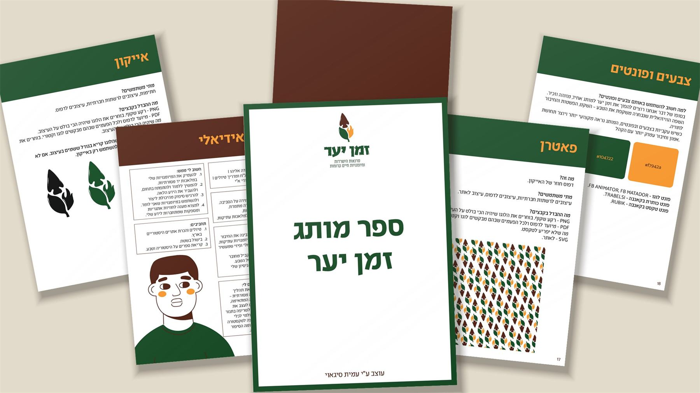
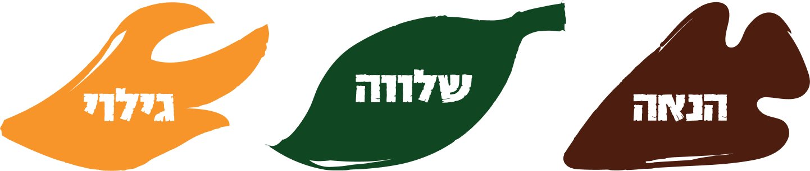
מציאת השם
זה היה אחד השלבים המשמעותיים ביותר בפרויקט. בחנו מגוון כיוונים, וכל שם נבחן לפי שלוש שאלות:
בהתחלה לא היה חיבור לאף שם, אבל דרך שיח משותף והבנה מעמיקה יותר של מה שאורי רוצה לשדר - הגענו לשם שתפס בדיוק את המהות של העסק.
השם
לבסוף נבחר השם "זמן יער", כי הוא לא מתאר רק את המקום. הוא מתאר את ההבטחה - לעצור את המרוץ, להקדיש זמן לטבע, להתחבר למלאכות קדומות ולעצמך.
פיתוח הזהות
אחרי בחירת השם יצרתי 2 "לוחות מיקוד". המטרה הייתה למצוא איזון בין טבע, אותנטיות, מלאכות קדומות, פשטות ותחושת Handmade.
אורי היה מאוד ברור: "אני לא רוצה לוגו שנראה כמו חברה". הוא רצה משהו שאפשר לחרוט על עץ, לצייר ביד, להרגיש שהוא שייך לטבע.
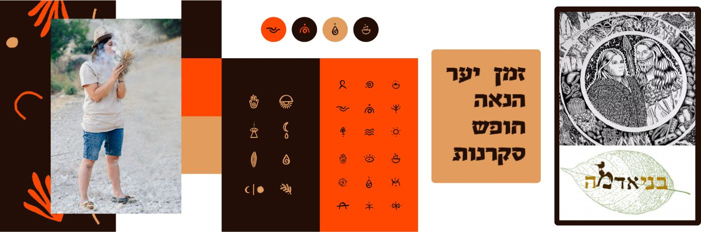
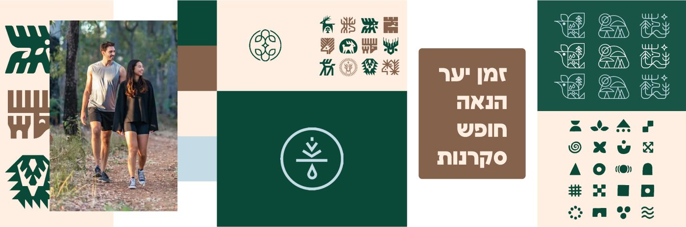
שיטת ההזרה
לפני הסקיצות אני כותבת שני מעגלים. במעגל הפנימי – כל מה שעולה מיד כשמדברים על העסק. במעגל החיצוני – מילים שקשורות, אבל לא בצורה שחושבים עליה ישר.
משם מגיעים הרעיונות שלא נראים כמו כל השאר בתחום.
עיצוב הלוגו
במקום לנסות להכניס עשרות סדנאות ללוגו אחד, בחרתי לזקק את המותג לשלושה סמלים בלבד: עלה, ראש חץ ואש. שלושת האלמנטים מתחברים לצורת עץ אחת, והאייקון משלב את עולם ההישרדות, הטבע והמלאכות הקדומות בצורה פשוטה וברורה.
לאורך הדרך עברנו כמה סבבי שיפור: חידוד הצורה, שינוי האיזון בין האלמנטים, התאמת הפונט ויצירת אייקון שקל לחרוט על עץ - עד שהגענו לגרסה שאורי הרגיש שמייצגת אותו באמת.
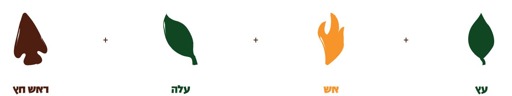
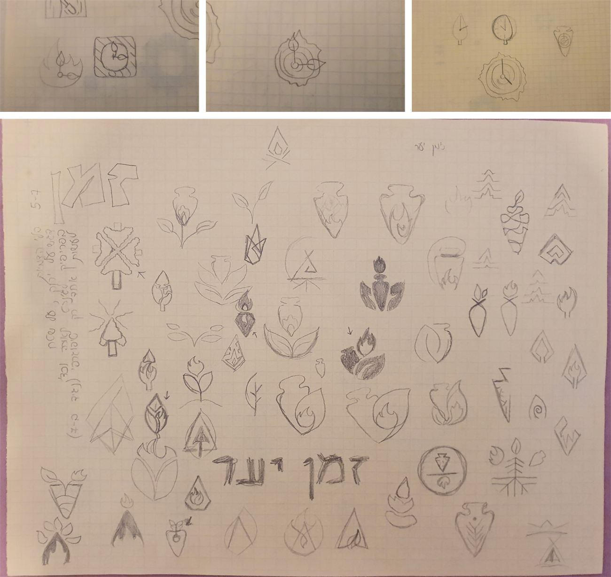
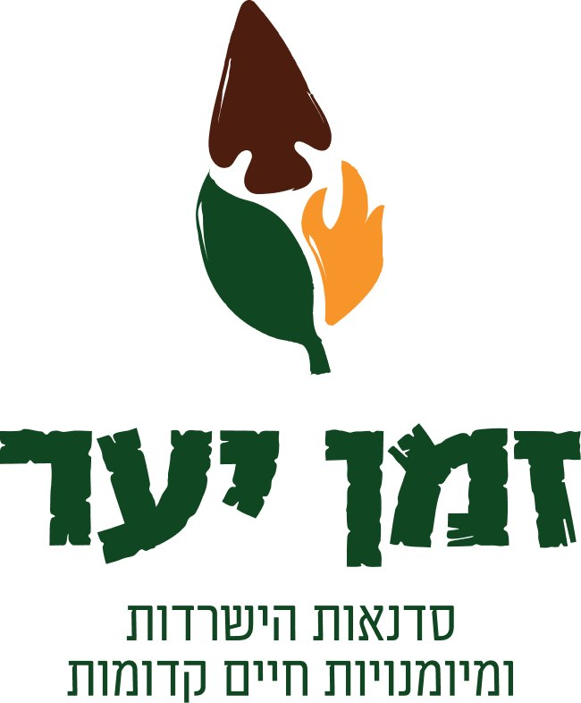
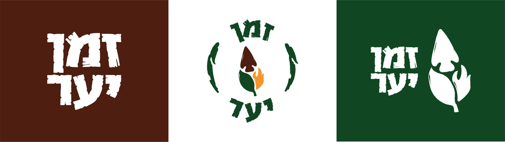
אתר תדמית
במקור בכלל לא תכננו לבנות אתר, כי הצורך העסקי הדחוף היה אחר. לאורי היו פחות מחודשיים למלא את קורס ההישרדות השנתי, ולכן החלטנו להתחיל דווקא בדף נחיתה.
לאחר שהעמוד עלה לאוויר, המשכנו לפתח אתר תדמית מלא שמרכז את הסדנאות, את הסיפור של אורי, המלצות, גלריה ויצירת קשר. כך יצרנו מקום אחד שמסביר את העסק בצורה ברורה.
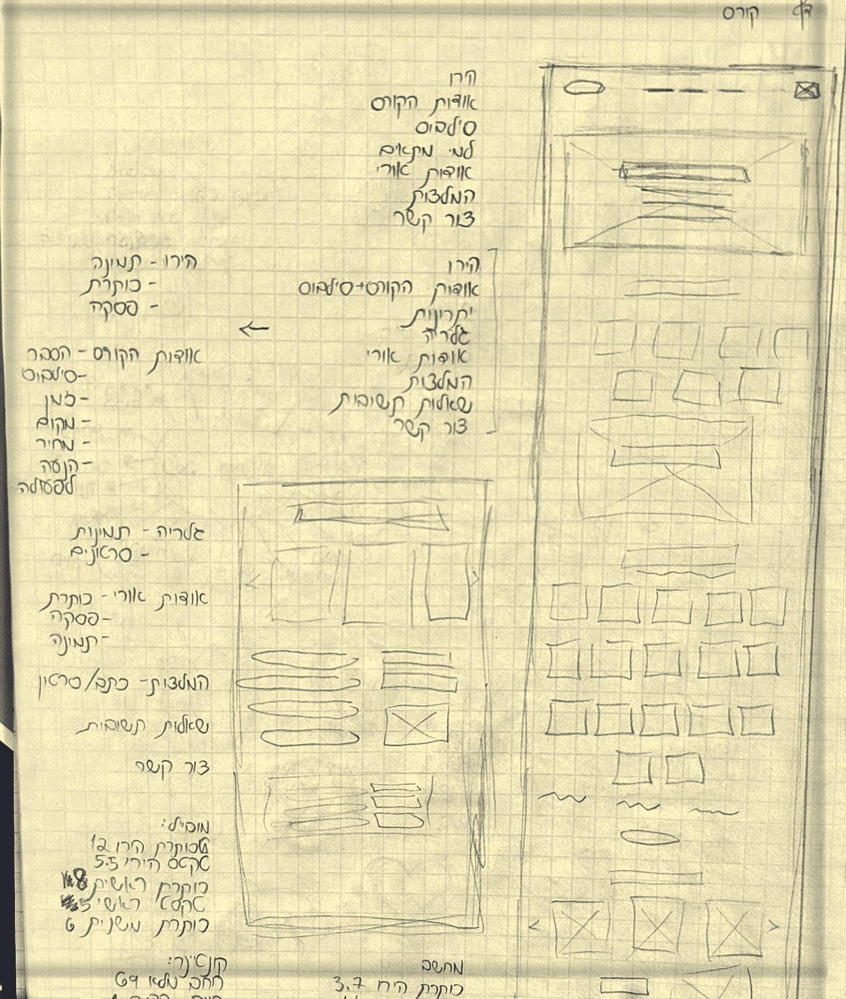
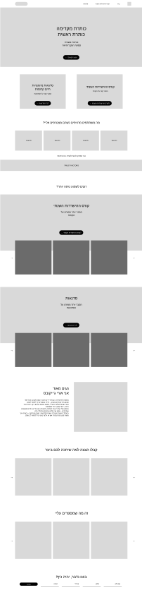
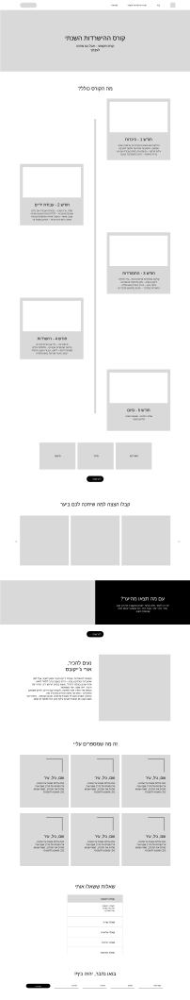
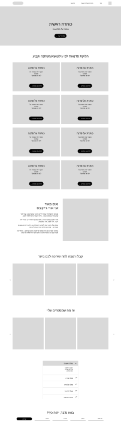
אתגרים והחלטות
האתגר המרכזי היה להפוך עסק שעושה המון דברים למותג אחד ברור. לכן התחלנו מהאסטרטגיה ולא מהעיצוב, ובחרנו בשם שמספר את החוויה ולא רק את הפעילות.
אורי היה תקופה ארוכה במילואים, וזה חייב אותנו לעבוד בגמישות ולהתקדם בכל פעם שהתאפשר.
אורי רצה משהו מאויר ועשיר בפרטים, אבל פשוט מספיק כדי לחרוט על העבודות שלו. בנינו לוגו שעובד גם על עץ, לא רק על המסך.
התחלנו בדף נחיתה בגלל צורך עסקי דחוף, ומשם בנינו אתר שמוביל את המשתמש להבין מה מתאים לו - במקום רק להציג מידע כמו אצל המתחרים.
התוצאה
העסק עבר שינוי משמעותי - מעסק מצליח אך מבולבל למותג ברור, אחיד ומזוהה. אורי קיבל שם חדש, זהות מותג, לוגו, אתר תדמית ושפה מקצועית שמייצגת אותו.
פניות חדשות
כבר ביום הראשון
יותר בהירות
לגבי הסדנאות
מותג שהוא גאה
לפרסם בכל מקום
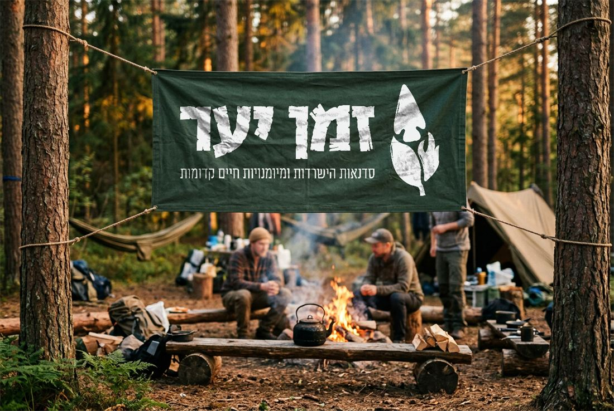
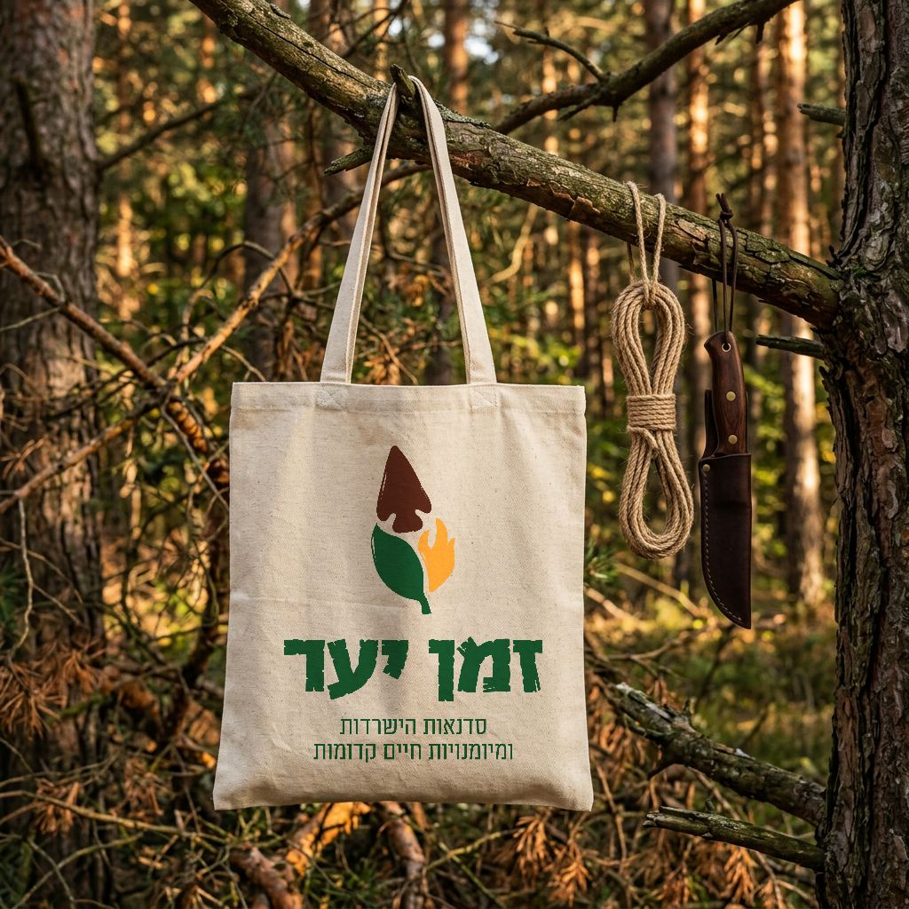
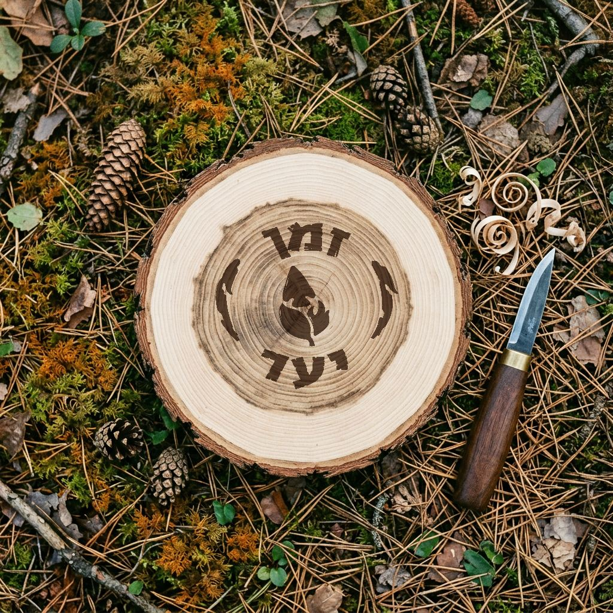
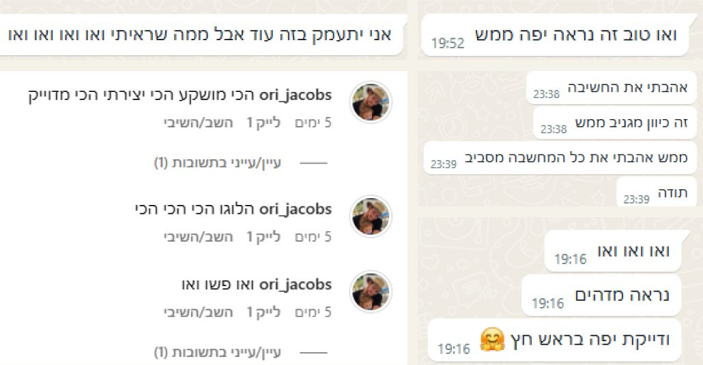
ההוכחה
האתר עלה, ואורי פשוט התחיל לשלוח קישור. כבר בימים הראשונים הגיעו לפחות 10 הרשמות דרכו.
ואת הגאווה במותג החדש הוא כבר שיתף בעצמו - חרוט על פרוסת עץ, בסטורי לכל העוקבים.
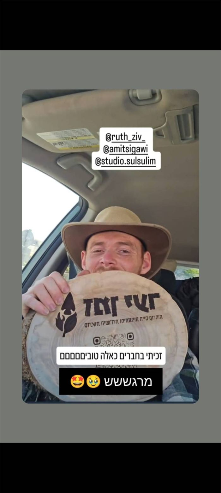
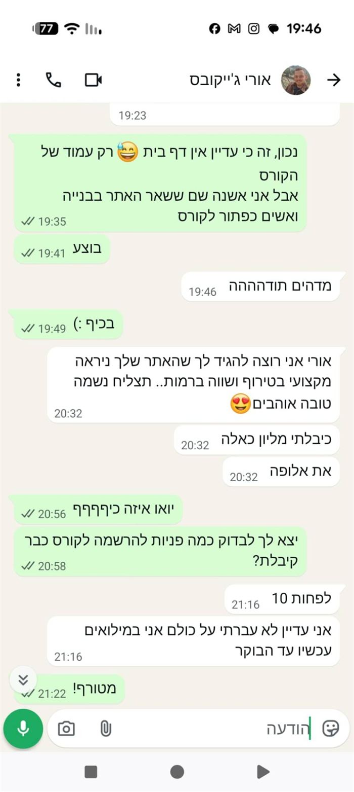
אבל המיתוג שלכם עדיין לא מצליח להעביר אותו בצורה ברורה, אשמח לעזור לכם להפוך אותו למותג שמספר את הסיפור שלכם בצורה מדויקת 😊
תשאירו פרטים ואחזור אליכם עד 2 ימי עסקים.